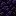

Product vision
Product vision
Why Udeos Launcher exists, how it should feel, and who it is for. This page is the reference for any design or product decision: when two options are both reasonable, pick the one that serves the objective and the audience described here.
 Objective
Objective
Get any player from opening the app to playing Minecraft with no account and no configuration, and give the players who want more everything they need without leaving the launcher.
Play
Install any version of Minecraft: Java Edition, its Java runtime and a mod loader with one button.Grow
Find, install and manage mods, packs, shaders and modpacks safely, with compatibility checked before anything is written.Share
Host a world friends can join from anywhere, and look the way you want with your own skins. The problem it solves
The problem it solves
Today, without Udeos
- An account wall before the first block is placed.
- A separate installer for each mod loader, and folders to find by hand.
- Mods that crash the game because a dependency or loader is wrong.
- Port forwarding or paid hosting to play with friends.
- Several tools for mods, skins and servers, each with its own look.
With Udeos
- A nickname and Play.
- Loaders and Java install themselves on first Play.
- Every install is planned: version, loader, dependencies, conflicts.
- Start a server and share an address that works behind any router.
- One launcher, one style, everything in one place.
 Audience
Audience
Two primary groups pull the design in different directions. The answer is "casual by default, dense on demand": the surface is for the first group, one step in is for the second.
The casual player
Primary · kids, teens, families- Kids and teens, or a parent setting it up for them.
- Often a shared family PC or a modest laptop.
- Reads short sentences, scans for big buttons and familiar items.
- Wants: Play, a skin, a mod a friend mentioned.
- Frustrated by: accounts, waiting with no feedback, English-only text.
The modder
Primary · modpack players and tinkerers- Runs several modded instances on different versions and loaders.
- Knows what Fabric and Forge are, tunes memory and JVM flags.
- Wants density: lists, filters, versions, exact control.
- Frustrated by: dependency hunts, conflicts found after a crash, slow UIs.
The host
Secondary- A player who wants a world for their friends.
- Has no access to the router, or a provider that blocks it.
- Wants: Start, an address to paste in a chat, backups that just work.
The joining friend
Secondary- Receives an address or a
.udeosfile. - Wants to join without matching versions and mods by hand.
- May use another launcher: the host can open the server to Anyone.
 The style that characterises it
The style that characterises it
Game-native and quiet: a night-sky console menu where the real Minecraft items bring the colour and the charm.
Night-blue canvas
Dark but never black (#0E1423) with two soft accent glows. Flat panels one step lighter, told apart by a blue-tinted hairline. Light theme as cool sky paper.One blue accent
Blue carries the single main action of a view. Gold means working, green means live, red means failure. Nothing else competes.Real pixel textures
Minecraft's own 16 by 16 items as instance icons, heading marks and props, rendered crisp. Faint items drift on the canvas, behind the content.Modern type
Geist for reading, Geist Mono for numbers and addresses, Pixelify Sans only for the wordmark and the big progress figure: one wink at the game, not a costume.Soft, rounded shapes
Radii of 6, 10, 16 and 22 px, pill tags, low soft shadows. Friendly for kids, calm for long sessions.Delight in moments
An item drops into an empty list, the loader is a hopping block, Playing is a live green chip, closing a game says "GG". Motion only where something needs noticing. Personality
Personality
| Udeos is | but never |
|---|---|
| Playful | Childish or noisy |
| Game-native | A copy of Minecraft's own menus |
| Calm while you work | Bland or corporate |
| Helpful in plain words | Technical on the surface |
| Fast and light | Flashy at the cost of frames |
| Private by default | Asking for accounts or data |
 Product principles
Product principles
1. Press Play first
The path from opening the launcher to playing is the shortest thing on screen. The last played instance is always one click away.2. Waiting is a feature
Downloads are long. Every wait shows what is running, how far along it is, and what the player can do meanwhile.3. Casual by default, dense on demand
Nothing a child cannot understand on the surface, modder-grade control one step in.4. Light on weak PCs
System web view instead of a bundled browser, no heavy effects, shared downloads.5. Local and private
No account wall, no telemetry. The launcher only talks to the services it needs.6. Safe by construction
Installs are checked before they happen; anything that cannot be recovered asks first; small things can be undone. What success looks like
What success looks like
These are design targets taken from the requirements, not measured usage data. No analytics are collected.

What it is not